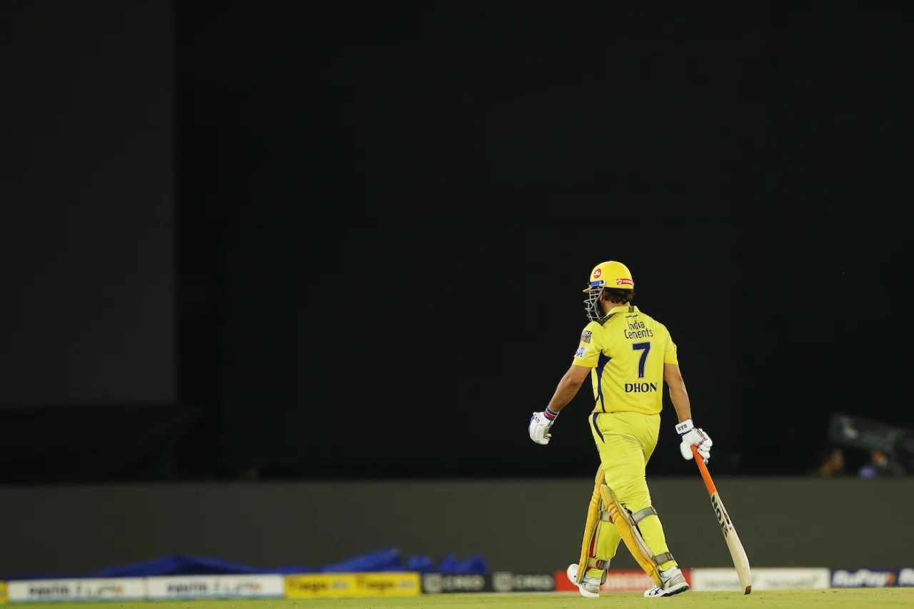
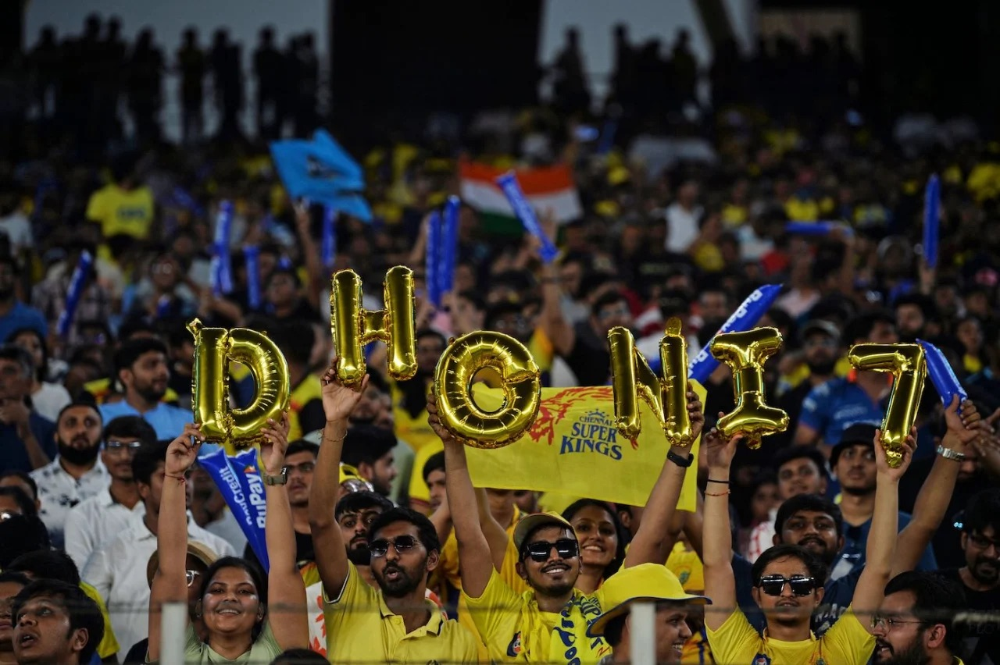
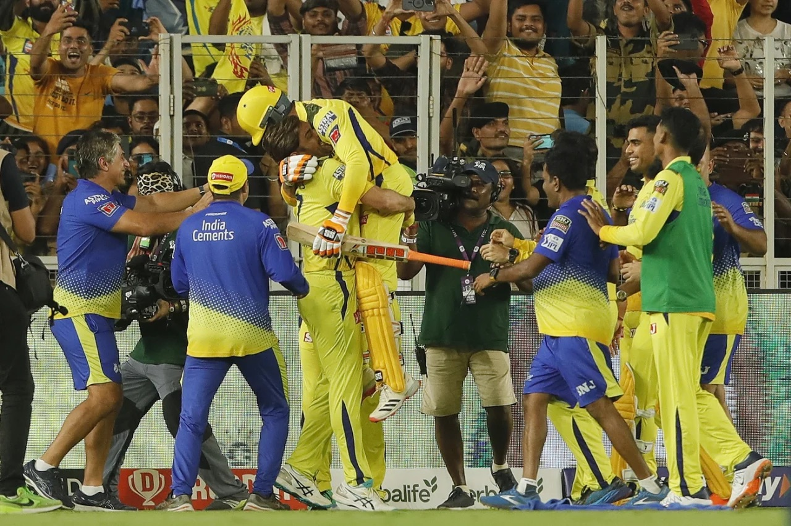
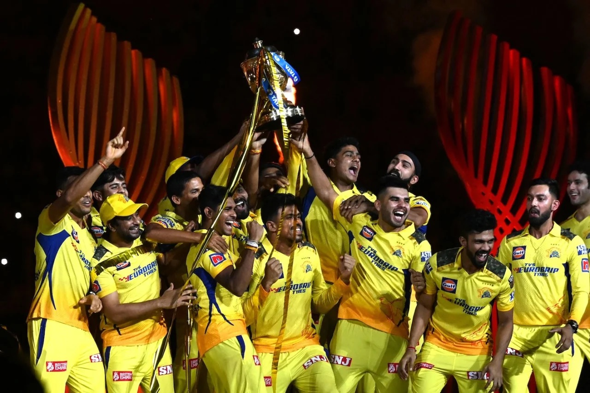

In Dhoni's Shadow: #Yellove Never Fades
There is a stillness to MS Dhoni that no coaching manual can teach and no data analyst can fully quantify. While IPL rosters have been rebuilt around explosive openers and death-bowling specialists, Dhoni's presence at the crease — or simply in the dugout — has always carried a different kind of weight. It is the weight of belief, of certainty, of a man who has seen every possible crisis a T20 match can throw at a team and faced each one with the same unhurried calm. His captaincy record alone tells a story that borders on the mythical — five IPL titles, a habit of winning from positions where most teams had already mentally conceded defeat, and a reputation for producing his best cricket precisely when the pressure is at its most suffocating. He turned Chennai Super Kings into more than a franchise. He made them a philosophy.
What separates Dhoni from every other captain this tournament has ever seen is not just what he does, but what he makes others do. Young bowlers find an extra yard of confidence when he crouches behind the stumps and quietly tells them exactly where to bowl next. Batsmen walk to the crease knowing their captain has already mapped out every scenario. Even his stumping — that blinding, almost casual glove work — feels like a reminder that the finest details are always attended to when Dhoni is in charge. He has never needed to be the loudest voice in the room to command absolute authority. Twenty years of cricket, countless impossible victories, and one unshakeable legacy — the Dhoni effect is unlike anything the game has ever produced, and may never produce again.

The 2023 IPL final will be spoken about for decades, and not just because Chennai won it. It will be remembered because of the way they won it — clawing back from the edge, refusing every invitation to fold, finding solutions in the moments when problems seemed insurmountable. Ravindra Jadeja, Dhoni's most trusted lieutenant, was the embodiment of that spirit on the night, combining aggression with intelligence in a partnership that felt like years of shared understanding finally crystallising under the brightest lights. When Dhoni walked to the crease in those final overs, the equation was still daunting, but something shifted in the stadium — because everyone present knew that this was exactly the kind of moment he was built for. He finished the game in the only way he knows how: calmly, cleanly, and with a boundary that felt inevitable even as it left the bat.
What made that title feel different from CSK's previous triumphs was the sheer weight of doubt that surrounded them getting there. This was not a dominant, wire-to-wire campaign — it was a tournament full of wobbles, close calls, and moments where the cracks threatened to become chasms. Dhoni's tactical brilliance throughout had been quietly extraordinary: rotating his bowlers with surgical precision, reading opposition match-ups before they had even taken shape, and trusting young players in moments that would have buckled most experienced campaigners. By the time the trophy was raised and the yellow confetti filled the night sky, it felt less like a result and more like a coronation. The king, once again, had refused to be dethroned.

Five titles. No other franchise in IPL history has reached that number, and the manner in which Chennai Super Kings have accumulated them — across different eras, different squads, and vastly different versions of the tournament — makes the achievement all the more extraordinary. This is not a dynasty built on one golden generation; it is a culture that has proven it can outlast any individual, absorb any setback, and adapt to any era of the game without ever losing its identity. A new generation of players has inherited the values that Dhoni and the franchise have embedded over nearly two decades, and they carry them forward with the kind of quiet confidence that only comes from knowing exactly where you come from. The #Yellove faithful have always understood that supporting CSK is not just backing a team — it is subscribing to a way of seeing cricket entirely. As IPL 2026 unfolds, that faith feels more justified than ever, and everything from here is simply more gold to add to an already gleaming story.
